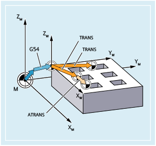
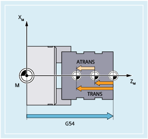
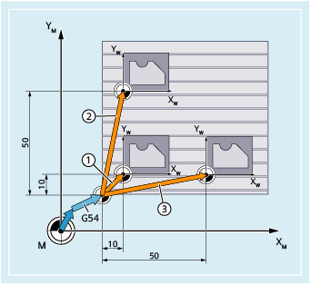
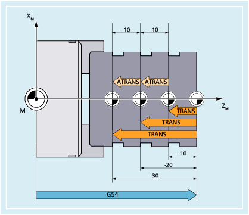

The substituting frame instruction TRANS shifts the zero point of the current workpiece coordinate system set using G54 ... G57, G505 ... G599 (settable zero point system, SZS) in absolute terms. Frame instruction ATRANS shifts the zero point of the last programmed workpiece coordinate system or currently set workpiece coordinate system additively.
|  Programmable work offset when milling |  Programmable work offset when turning |
| Absolute offset of the workpiece zero | |
Reference point: | Zero point of the current workpiece coordinate system set with G54 ... G57, G505 ... G599 (SZS) | |
Alone in the block: | Yes | |
| Additive offset of the workpiece zero | |
Reference point: | Zero point of the currently set workpiece coordinate system or last programmed workpiece coordinate system using a frame instruction. | |
Alone in the block: | Yes | |
| Offset values in the direction of the specified geometry axes (path, synchronous and positioning axes) As example, the following definitions should apply:
| |
| Notice |
Absolute frame instructions delete all programmed framesIf a programmable frame builds on existing frames, then the additive frame instruction should be programmed instead of the absolute frame instruction. |
In the following milling example, using an NC program, three identical workpieces are to be machined from three clamped blanks. The machining sequence to machine the workpiece is saved in one subprogram. The required workpiece zeros are set and then the subprogram called using programmable, absolute work offsets (TRANS).
① | First programmable absolute work offset (→ block N50) |
② | Second programmable absolute work offset (→ block N70) |
③ | Third programmable absolute work offset (→ block N90) |
| Program code | Comment |
|---|---|
| ... | |
| N30 G17 G54 | ; Machining plane X/Y, workpiece zero |
| N40 G0 X0 Z2 | ; Approach starting point |
| N50 TRANS X10 Y10 | ; Absolute offset |
| N60 L10 | ; Subprogram call |
| N70 TRANS X50 Y10 | ; Absolute offset |
| N80 L10 | ; Subprogram call |
| N90 TRANS X10 Y50 | ; Absolute offset |
| N100 L10 | ; Subprogram call |
| N110 M30 | ; End of program |
In the following turning example, using an NC program, three identical workpieces are to be machined from three clamped blanks. The machining sequence to machine the workpiece and the final cutting off is saved in one subprogram. Programmable work offsets are used to set the required workpiece zeros and then call the subprogram.
| Program code | Comment |
|---|---|
| ... | |
| N30 G18 G54 | ; Machining plane Z/X, workpiece zero |
| N40 G0 X0 Y0 Z2 | ; Approach starting point |
| N50 TRANS X0 Z-10 | ; Absolute offset |
| N60 L20 | ; Subprogram call |
| N70 TRANS X0 Z-20 (or ATRANS Z-10) | ; Absolute offset |
| N80 L20 | ; Subprogram call |
| N90 TRANS X0 Z-30 (or ATRANS Z-10) | ; Absolute offset |
| N100 L20 | ; Subprogram call |
| N110 M30 | ; End of program |
See also:
Programmable work offset (G58, G59)
Programmable frames (overview)